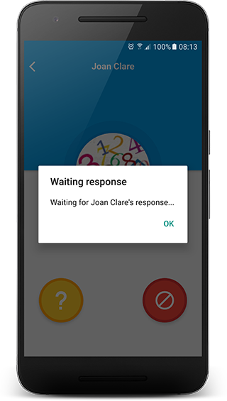

Friends
Add a friend
Adding a friend is required when you want to share the pharmaceutical information with others.
Thinking about those who share the management of medications with others, AFMussap Tech developed this feature to help you to better coordinate this.
Let's have a look at two examples of how this works.
Example 1
You take care of your child’s medicine.
You’ll be away for few days and you ask your partner to take care of this.
In this case, instead of your partner adding the medication to his/her App (add name, type, alarm, etc.), you can share the relevant medication with him/her, and when he/she accepts your request, the medication will be automatically added to his/her App, whith the alarm set.
Example 2
You’re taking a Vitamin.
You friend tells you that he needs to take the same Vitamin as you.
There’s no need for him to add all the required data to his App. If you share your Vitamin data with him, once he accepts it, the Vitamin will automatically be added to his App, whith the alarm set.
That's the fundamental idea of this feature: to make people's life easier.
Now, let's see how to add, remove and manage friends on EveryPill Reminder
Add a new friend
There are two ways for adding friends to EveryPill Reminder:
- You can send a request to your friend, or
- You can accept a friend's invitation.
Send a request to a friend
You'll need the email that you friend uses to access EveryPill Reminder.
Access the tab Friends and tap Add.
You are redirected to the 'Add new friend' screen, with a text box to enter an email, and a button to search.
Enter you friend's email and tap (search).
If you typed the correct email, you'll see your friend's photo, name and account icon (Facebook or Gmail), and the Add button.
Tap Add
Message: 'Do you want to add
Result - You're redirected to the friend's list - Your friend is listed - Message 'Friend invitation sent' is displayed
If the email is incorrect, either because of a typo or if it's not the email that your friend uses to access EveryPill Reminder, the message 'No friends found' is displayed.
View your request details
While you friend doesn't respond your request, if you tap him/her from the list you'll see the buttons Waiting (a question mark) and Delete

By tapping Waiting, the message 'Waiting for
By tapping Delete, the message 'Cancel invitation to
Once your friend accepts your request, if you tap he/she from the list you'll see the buttons Chat and Delete
Tap Chat if you want to send your friend a message.
EveryPill Reminder chat doesn't send notifications. To see a message that was sent to you, you have to access the tab Chat
Tap Delete if you want to remove this friend.
Add friends by accepting their invitation
If others send you a request, you'll see them on your list of friends.
Tap the relevant friend, and you'll see the buttons Accept and Delete
Tap Accept to accept the request.
Message 'Add
Remember: Just those who uses EveryPill Reminder and know your email (the email that you use to access the App) can send requests to you.
If your friend cancel the invitation that he/she has sent to you before you accept it, when you tap he/she from the list you'll see the Waiting (a question mark) and Delete buttons.
However, the Waiting button will display '
In this case, you have two options:
- Delete your friend and send he/she a new invitation.
- Wait for your friend to re-send the invitation (If he/she deleted it by mistake, he/she can send the request again).
Delete friend
- Delete an invitation that you sent - if your friend didn't accept it yet
- Delete friend that has deleted you
To delete a friend, just tap he/she from the list and then tap Delete
Message: 'Remove
Result - You're redirected to the friend's list - Friend is deleted from the list of friends - Message: 'Friend deleted' is displayed - Friend is deleted from the sharing medication list, and you can't share information with him/her anymore.